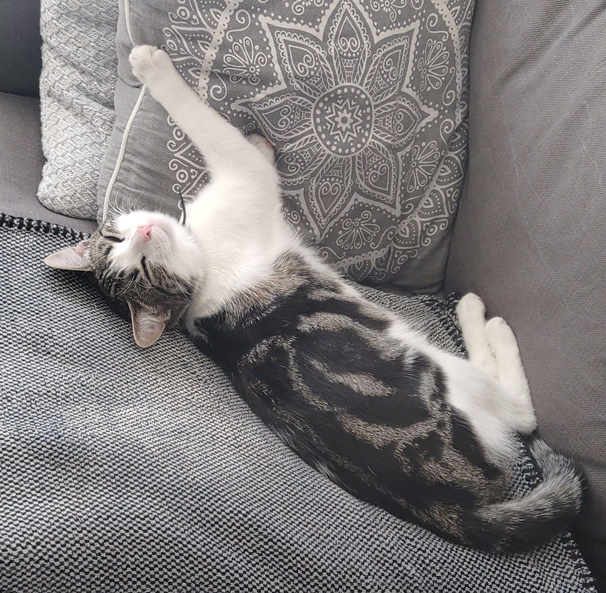

Ons Gezin
Ik ben dus geboren in Den Bosch, ik was het eerste kleinkind in de familie en ook nog eens geboren op dezelfde dag als de verjaardag van mijn Oma.
Kortom ik was zowel voor de familie een leuk cadeautje, maar helemaal voor mijn oma.
Ik woon in Den Bosch, samen met mijn moeder, broertje en mijn zusje.
Mijn ouders zijn gescheiden en mijn vader woont in Waalwijk. Hier gaan we om het weekend (of nou ja, dat was het eerst) daar langs.
Aangezien zowel mijn broertje en ik nu een vriendin hebben komen we wel minder bij mijn pa maar we doen ons best regelmatig langs te gaan.
Ik ben 21, mijn broertje is 19, mijn zusje bijna 18 en m'n moeder 55. Mijn vader... ja die is 60, maar daar gaan we het maar niet over hebben.
Ik heb 1 nichtje, 2 nichten (maar van m'n vaders kant) alleen deze zie ik nooit, en een neefje van 20.
We hebben trouwens ook nog een kat, Saartje. Zij is nu net iets ouder dan een jaar.

Voor Saar hadden we een andere poes genaamd Plukje, maar daar hebben we wel wat met meegemaakt het laatste jaar.
Het begon namelijk dat na een jaar of 2/3 dat we hier woonden Plukje hinkend thuis kwam. Bleek dat ze was beschoten door een luchtbuks.
Die kogel hebben ze laten zitten en ze kon kort na het bezoek aan de dierenarts weer bijna alles doen wat ze kon.
Tot op een dag ze thuis kwam, slepend met haar hele achterlichaam. Ze schreeuwde het gewoon uit van de pijn in de woonkamer en dat was echt niet leuk om te zien.
We hebben haar in moeten slapen want er bleek een bloedprop bij haar hart te zitten waardoor haar hele achterlichaam verlamd raakte.
|
Rest van de familie
Zoals ik boven zei heb ik 3 nichten en een neefje.
Mijn neefje en een van die nichtjes zijn de kinderen van mijn oom, mijn tante heeft geen kinderen maar wel een hele leuke "nieuwe" (onderhand ook al een aantal jaar) vriend.
De andere 2 nichten zijn van mijn vaders kant, die hebben we nu al heel erg lang niet gezien en die zijn ook ouder dan mij. Volgens mij werken die ook voltijd dus dat is sowieso al lastig, maar wel heel jammer.
Met de familie die ik wel zie, van mijn moeders kant, doen we dan wel leuke dingen.
We komen bij elkaar op visite, buiten verjaardagen om, bij de kerst komen we samen en bijvoorbeeld bij het volksfeest in Winterswijk.
Mijn opa en oma wonen namelijk in Winterswijk en daar vieren we veel feestjes en de kerst bijvoorbeeld.

Mijn vader is opgegroeid in Winterswijk, maar mijn moeder is eigenlijk te veel verhuisd toen ze jong was. Zij is meer in Sluis opgegroeid.
Ze komen wel allebei uit Winterswijk.
Mijn oom met mijn neefje en nichtje wonen in Oud-Beijerland en mijn tante woont in Arnhem. We gaan bij hun vrijwel alleen op visite met verjaardagen maar ik ben vorig jaar wel gezellig met mijn tante, haar vriend en mijn neefje in Arnhem op stap geweest.
|
Vrienden en vriendinnen van werk
Tijdens mijn werk bij het zwembad heb ik veel leuke contacten opgebouwd.
2 weken geleden zijn we nog met een paar wezen barbecueën bij een van m'n semi-oud-collega's. Dit was heel gezellig want zo kon ik weer even goed bijpraten met een aantal die ik al best een tijdje niet had gezien.
Voor de corona toestand gingen we ook nog wel regelmatig in de weekenden met een hele groep stappen, ik was nooit zo van het uitgaan maar doordat een van hun mij een keer mee had genomen vond ik het stiekem toch wel leuk.
Ik was bij het uitgaan ook nooit zo eentje die achter de meiden aan ging, tuurlijk zag je wel eens leuke meiden maar ik was te onzeker van mezelf dat ik dan niet er naar toe durfde te gaan.
Ik genoot meer van de muziek, de gezelligheid, en het domme gelul met m'n vrienden of compleet vreemden.
Met 2 collega's ben ik vorig jaar naar Supersized Kingsday geweest, een Harder Styles festival. Tenten met Hardstyle, Hardcore, Uptempo, Rawstyle en nog meer.
Dit was ook mijn aller eerste festival waar ik ooit naar toe ben geweest en ook al wilde zij meer rondlopen en 10 min per tent bekijken, vond ik het wel heel leuk.

We hadden ook kaartjes voor Intents voor dit jaar maar dat wordt dan hopelijk volgend jaar.
 Voor als je het wilt weten, nee ik kan niet hakken. Maar klaplongen kan ik misschien nog enigzins (Maar alleen als iedereen het doet).
Voor als je het wilt weten, nee ik kan niet hakken. Maar klaplongen kan ik misschien nog enigzins (Maar alleen als iedereen het doet).
Ook zijn we met een hele groep waar ook nog hele oud-collega's bij zaten naar Puur Hollands geweest. Ik houd zelf niet van Nederlandstalige muziek, maar met genoeg bier wordt het uiteindelijk wel leuk.
|
Relatie drama
Hiermee leg ik flink wat op tafel, en of je me hiervoor gaat uitlachen of wat dan ook maakt me niks uit.
Maar bereid je voor want het is zeker niet zo spannend.
Laten we beginnen op de basisschool, in groep 7 of 8 (weet ik niet meer zeker) kreeg ik toen mijn eerste vriendinnetje.
Natuurlijk was dat allemaal niet zo spannend, simpelweg knuffels en een kusje af en toe, en gewoon gezellig samen een keer naar de bioscoop of buiten rondhangen.

Eind groep 8 werd ik gedwongen het uit te maken door een grote groep pestkoppen omdat "ik haar toch niet meer zou zien". Ik heb super lang met schuld gezeten en heel lang best rot gevoeld daardoor, maar kon er ook niet zomaar wat aan veranderen.
Op de middelbare is er niks van gekomen, doordat het zo mis was gegaan op de basisschool en ik daarom zowat al mijn zelfvertrouwen kwijt was geraakt, lukte het me ook niet om met meiden te praten.
Na mijn MBO of in het laatste jaar had ik wel een paar maanden een "leuke" tijd gehad met een vriendin van de ex van mijn beste vriend.
Nu bleek ze gewoon zo'n aandachts... te zijn dus ik heb het toen snel maar weer afgeblazen, ze bleef daarna maar appen en tja zulke mensen ghost ik dan wel.
Nu 2/3 jaar later, afgelopen April, ben ik in contact gekomen met een hele leuke meid.
We hadden een aantal maandjes wat leuke dingen gedaan, en uiteindelijk klikte het zo goed dat we het een goed moment vonden om het maar officieel te maken.
Je moet ergens beginnen, en ik zeg daarom ook, ook al ben ik nu 21, dit is pas mijn eerste "echte" relatie.
Maar dan ook wel meteen met een hele leuke meid van het SintLucas.
|